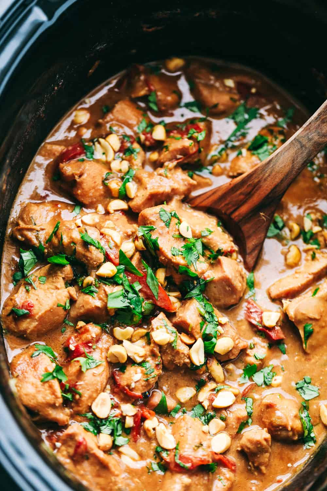

I've always loved this recipe for Thai Peanut Chicken! It's very easy to make. All you have to do is prepare the ingredients, drop them in your slow cooker, and let the machine do all of the work. The end result is a delicious meal that keeps well for days to come and can easily be brought to work.
To make this recipe even easier, chop up the chicken into cubes as soon as you bring it home from the grocery store, and put it in the freezer until you need it. Let it defrost overnight before you're ready to cook, and then you can quickly throw everything in the slow cooker in the morning before you leave for work.
This recipe is originally from The Recipe Critic. All credit for this recipe goes to the original author. I've made some alterations based on my own preferences.